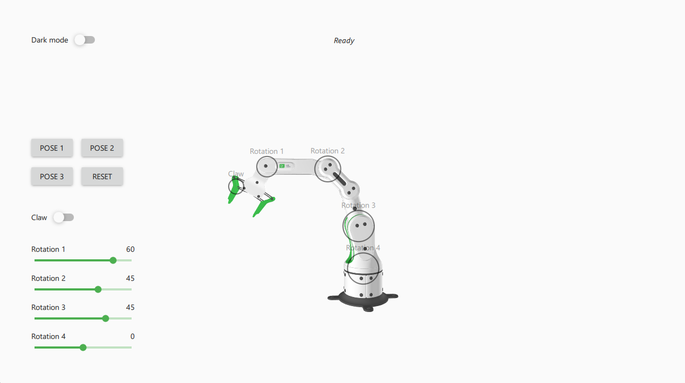

Robot Arm
Demonstrates how to add a C++ backend to a 3D project from Qt Design Studio. This example demonstrates adding a C++ backend to a 3D project created in Qt Design Studio. The example itself consists of an interactive industrial robot arm in a Qt Quick 3D scene. The 2D UI to control the robot arm is implement using Qt Quick Controls.

For Qt Design Studio the Robot Arm Example comes with a simple QML based QML module in backend_moc/Backend/Backend_moc.qml, that serves as a backend for the project when using it with Qt Design Studio. The C++ application implements a compatible backend as a C++ based QML module. Both QML modules implement the same API, which ensures compatibility between the two modules.
The Qt Quick 3D scene for the Robot Arm is defined in content/RoboticArm.ui.qml. The 2D UI is implemented in content/MainScreen.ui.qml and is repsonsive and also supports a light and dark mode. The example uses the Material style from Qt Quick Controls and the dark and light theme to implement both modes.
Running the Example
To run the example from Qt Creator, open the Welcome mode and select the example from Examples. For more information, visit Building and Running an Example.
Note: The example makes use of the Qt Quick 3D module, which is a separate item in the Qt Online Installer. If the example fails to configure, please make sure that you have Qt Quick 3D package installed.